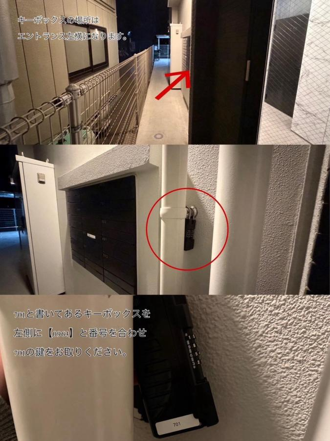

Trip Overview
福岡行程總覽
7/21–7/28・以區域順路為主・4人同行
8 天行程
5 個 FunPASS 必遊景點
2 天跨縣 Daytrip
Trip Overview
7/21–7/28・以區域順路為主・4人同行
飯店名稱
LuxurySweet East71
日文地址
〒812-0053 福岡県福岡市東区箱崎1-41-22
Modern Palazzo 箱崎grace 701
英文地址
1-41-22 Hakozaki, Higashi Ward, Fukuoka, 812-0053 Japan
Modern Palazzo Hakozaki grace 701
聯絡電話
+81 70-4732-0719
抵達路線
從箱崎宮前站 4 號出口出站後左轉，直走至「箱崎小入口」路口右轉，再前行約 250 公尺即可到達。
入住與門禁
請依房東訊息的房號與專屬入館資訊取用鑰匙、開啟入口門，搭電梯至 7 樓後再依指示進房。請勿將門禁與 Wi‑Fi 資訊分享給非同行者。

圖示說明：鑰匙盒位於建築入口左側。請找到標示「701」的鑰匙盒，將左側數字對準「0963」，取出 701 號房鑰匙。
住宿注意事項
周邊是住宅區，請注意音量。室內禁菸，僅可在陽台使用菸灰缸吸菸；如攜帶寵物須事前申報，費用為每晚每隻 ¥1,200。
退房與垃圾
請於 11:00 前退房；延遲退房每小時加收住宿費的 10%。離開前請復原家具、關閉瓦斯／電器／冷氣，並把鑰匙放回鑰匙盒。垃圾請放至入口垃圾區：紅袋可燃、黃袋寶特瓶／玻璃瓶、藍袋不可燃（罐頭／金屬）。
住宿稅
依福岡縣規定，每人每晚 ¥200，請投入屋內設置的住宿稅罐。入口的人感感測器僅用於人數確認。
📍 預計兌換：7/21 (二) 19:30 抵達博多站 Lopia 採買時順便兌換
📍 兌換地點：JR 博多站綠色窗口 / 綠色售票機（至 22:00）
💼 預備文件：4 人護照正本（含短期滯在貼紙）+ Klook QR Code 憑證